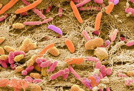

Our Research
A bird's-eye view of what we do

Microbiomes
Investigating the diversity and interactions of microbiomes through metagenomic and transcriptomic analysis including: early-life rumen, poison dart frogs, trees, pigs, and food

Antimicrobial Resistance
Developing novel methods to identify and eradicate antimicrobial resitance. Machine learning tools to predict AMR phenotype and synthetic phage therapies to circumvent resistance.
Bioinformatic Tool Development
Creation of tools to use in our bioinformtatic analyses. Covering a range of areas from pseduogene detection, metagenomic assembly, and taxonomic barcoding